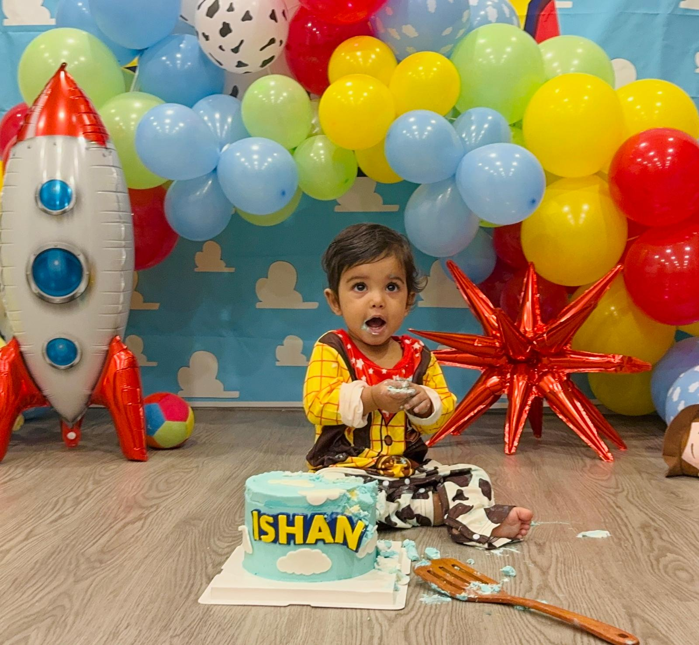

Quick answer
Balloons & Bliss SG first birthday decoration packages start from SGD 250. Indicative packages range from SGD 250 for simple balloon styling to SGD 1,500+ for large, fully customised events.
- Venue and access
- Balloon styling and backdrop size
- Personalisation and props
- Number of decoration areas
- Setup complexity and delivery location
Indicative first birthday decoration prices
| Package | Indicative price | Best for |
|---|---|---|
| Simple Balloon Styling | SGD 250–350 | Home celebrations |
| Classic Birthday Setup | SGD 350–600 | Condo function rooms |
| Premium Decoration Package | SGD 600–900 | Restaurants and larger venues |
| Luxury Custom Styling | SGD 900–1,500+ | Hotels and ballroom events |
Prices vary according to design, venue requirements, materials and customisation. Request a quote for an exact price.
What affects decoration pricing?
1. Venue
Homes, condo function rooms, restaurants, hotels and event halls have different access, space and setup requirements. Larger venues may need wider backdrops or additional decoration areas.
2. Balloon styling
Organic garlands, arches, columns, walls, ceiling balloons and entrance decorations require different quantities of materials and installation time.
3. Personalised backdrops
The baby's name and age, custom colours, theme artwork and signage affect the design and fabrication work.
4. Theme and props
Some themes require additional props, custom artwork or specialised decorations.
5. Setup size
Small
For homes and intimate gatherings; may include a garland, sign or cake plinth.
Medium
For function rooms and restaurants; may include a backdrop, cake styling and props.
Premium
For hotels and larger events; may include multiple installations and custom areas.
What can a package include?
- Balloon garland or backdrop
- Personalised backdrop
- Welcome sign
- Cake plinth
- Basic event styling
- Professional setup
Popular add-ons
LED number “1”, balloon columns, artificial flowers, custom cut-outs, neon signs, extra clusters, dessert-table decoration and entrance styling.
How to keep costs manageable
Focus on one photo area
A single statement backdrop creates a clear place for cake cutting and photographs without decorating the whole venue.
Adapt an existing design
Using an existing theme direction may require less custom artwork than starting entirely from scratch.
Keep colours simple
Two main colours and one accent often look polished without unnecessary complexity.
Confirm venue rules
Check access times, balloon restrictions, hanging rules and removal deadlines before finalising the design.
Why families choose Balloons & Bliss SG
We create customised decorations for birthdays, gender reveals, baby showers, corporate events and other celebrations across Singapore. Services can include balloon garlands, personalised backdrops, welcome signs, cake-table styling, event styling and professional setup.
Frequently asked questions
How much does first birthday decoration cost?
Packages start from SGD 250 and can reach SGD 1,500+ for large, customised setups.
Can I customise the colours?
Yes. Decorations can be customised to suit your colours, venue and theme.
How early should I book?
Book as early as possible once your date and venue are confirmed.
Do you decorate HDB homes?
Yes. We decorate HDB homes, condo function rooms, restaurants, hotels and event venues across Singapore.
Do you provide setup?
Yes. Professional setup is available and its scope is confirmed in your quotation.
Request an exact quote
Share your date, venue, theme, colours and a photo of the available space.
Request a quote on WhatsAppRelated guides
First Birthday Themes for Boys · First Birthday Themes for Girls